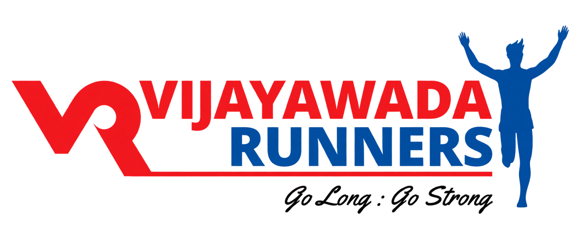
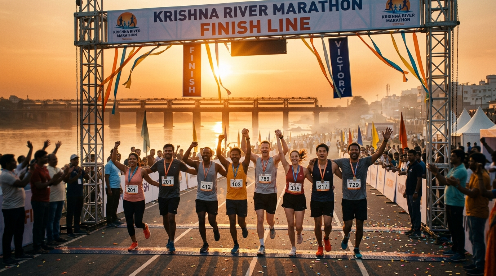

01
2017
The First Footsteps
200 pioneer runners gathered before sunrise at Benz Circle, sparking Vijayawada's first organized dawn running culture.
● 200+ Runners

Scroll horizontally along the asphalt road to explore the milestones, records, and community stories that built the Vijayawada Marathon legacy from 2017 to 2026.
200 pioneer runners gathered before sunrise at Benz Circle, sparking Vijayawada's first organized dawn running culture.
First officially timed 10K race with RFID transponders, establishing a benchmark for athletic precision in the city.
Inaugural 21.1K Half Marathon route crossing the historic Prakasam Barrage as morning mist rose off the Krishna River.
When cities locked down, thousands participated in our synchronized virtual run, keeping our community inspired and healthy.
A triumphant return to the asphalt with over 2,500 athletes. Introduced structured Sunday training clinics across city chapters.
Launch of the official Pacer Bus network and comprehensive volunteer marshaling system ensuring personal bests.
Pioneered eco-plogging and zero-waste hydration stations, protecting our riverbanks alongside athletic competition.
Welcomed national-level endurance runners from across 18 Indian states, solidifying Vijayawada as an elite running hub.
Expanded blade runner sponsorships, Freedom Trust prosthetic support drives, and dedicated para-athlete categories.
A decade of sweat, devotion, and community. One grand road, thousands of personal journeys, and an unforgettable sunrise.

BE PART OF THE 10TH MILESTONE
06 DECEMBER 2026 • VIJAYAWADA
VIJAYAWADA MARATHON 2026 • 10TH EDITION
Your registration has been recorded for the 10th Edition.